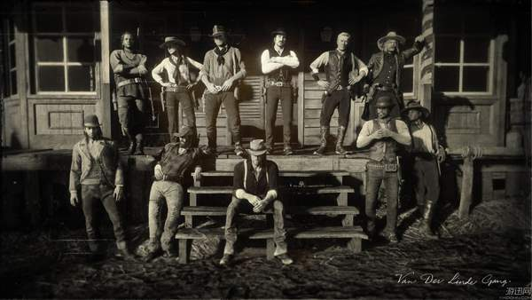
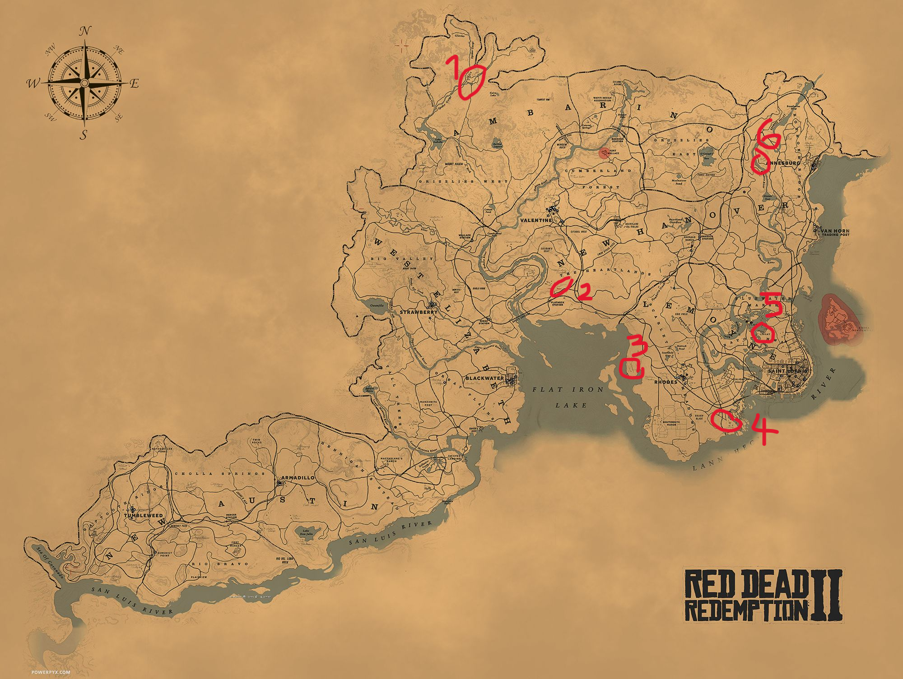
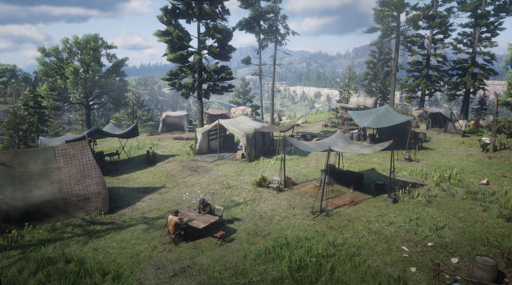
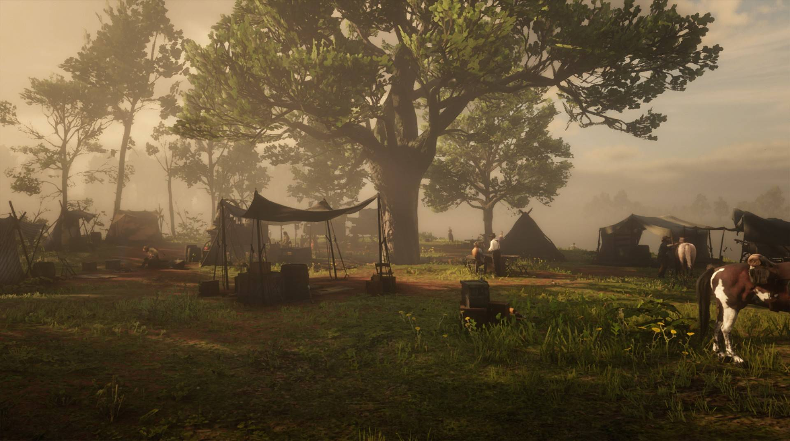
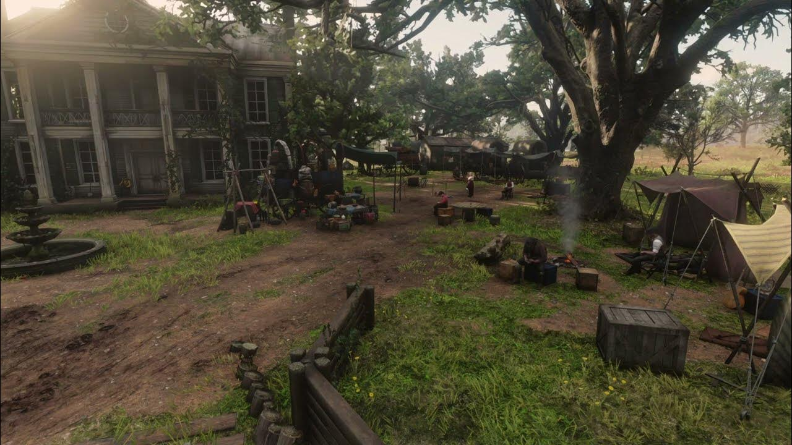
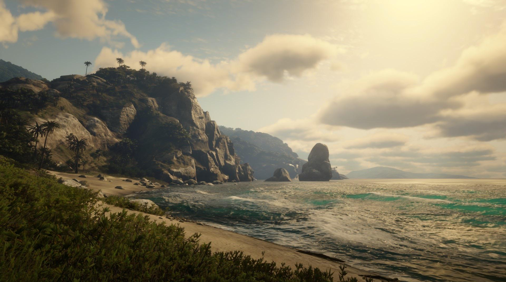
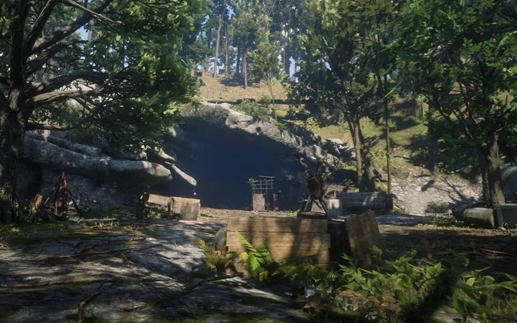

Red Dead Redemption 2
Red Dead Redemption 2 est un jeu vidéo se déroulant dans le Far West américain. On y incarne Arthur Morgan, un hors-la-loi membre du gang de Dutch van der Linde. Le gang est en fuite après un braquage qui a mal tourné. Au fil du jeu, Arthur doit gérer les défis de la vie de hors-la-loi tout en essayant de trouver une issue pour lui et les membres du gang. Le jeu offre un monde ouvert immense, des quêtes variées et une histoire riche en rebondissements.

ceci est la carte de jeu, les ronds rouges sont les differents lieux des campements de la bande. le numero 1 est Colter, le numero 2 est Horseshoe Overlook, le numero 3 est Clemens Point, le numero 4 est Shady Belle, le numero 5 est Lakay et le numero 6 est Beaver Hollow

Chapitre 1: Colter
Le premier chapitre de Red Dead Redemption 2 commence par un braquage qui tourne mal. Le gang de Dutch, dont fait partie Arthur Morgan, fuit dans les montagnes pour échapper à la poursuite des autorités. Ils luttent contre le froid et le manque de ressources, cherchant un abri sûr. Dutch garde espoir malgré les difficultés.

Chapitre 2: Horseshoe Overlook
Le chapitre 2 se déroule à Horseshoe Overlook vers Valentine. Le gang cherche à se rétablir après les événements de Blackwater. Arthur Morgan aide le gang en participant à diverses missions, dont la chasse et un braquage de diligence. Malgré le calme apparent, des tensions émergent, posant les bases pour les événements à venir.

Chapitre 3: Clemens Point
Au chapitre 3, le gang s'installe à Clemens Point près de Rhodes. Arthur mène des missions pour le gang, dont un braquage à Rhodes. Des conflits locaux émergent, ajoutant des tensions. Le gang doit rester uni face aux défis.

Chapitre 4: Shady Belle
Au chapitre 4, le gang s'installe à Shady Belle pas loin de Saint Denis, une grande ville. Ils entrent en conflit avec Angelo Bronte, un chef criminel influent de la ville, déclenchant des événements cruciaux, des tensions persistent.

Chapitre 5: Guarma
Le chapitre 5 de Red Dead Redemption 2 se déroule sur l'île tropicale de Guarma. Arthur Morgan et des membres du gang sont naufragés et doivent lutter pour survivre tout en cherchant un moyen de quitter l'île. C'est une aventure exotique et périlleuse.

Chapitre 6: Beaver Hollow
Au chapitre 6, le gang est en déroute, confronté à des trahisons et à des conflits internes. La santé d'Arthur décline et il prend des décisions cruciales pour le bien du groupe. C'est une période de tensions et de révélations dramatiques. à la fin du chapitre on vois la mort de Arthur Morgan.
